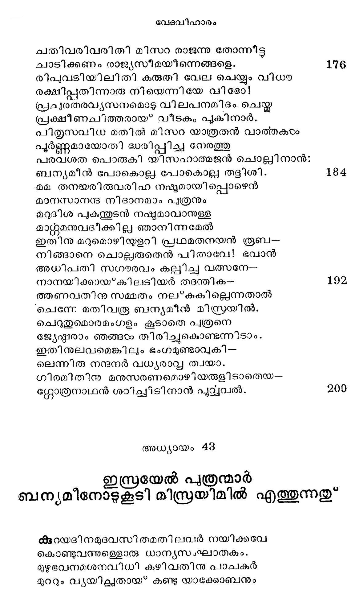
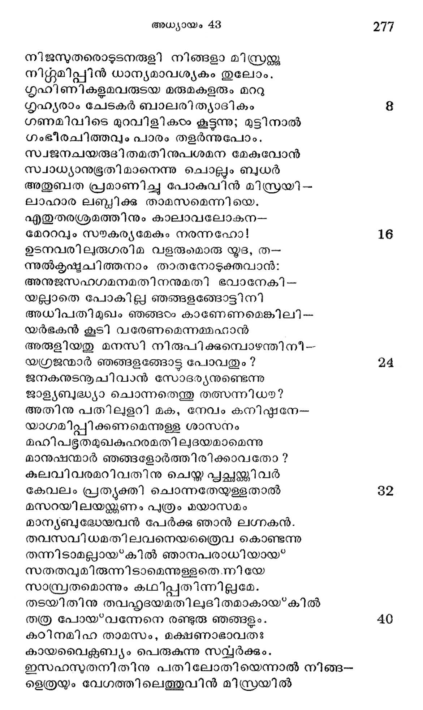
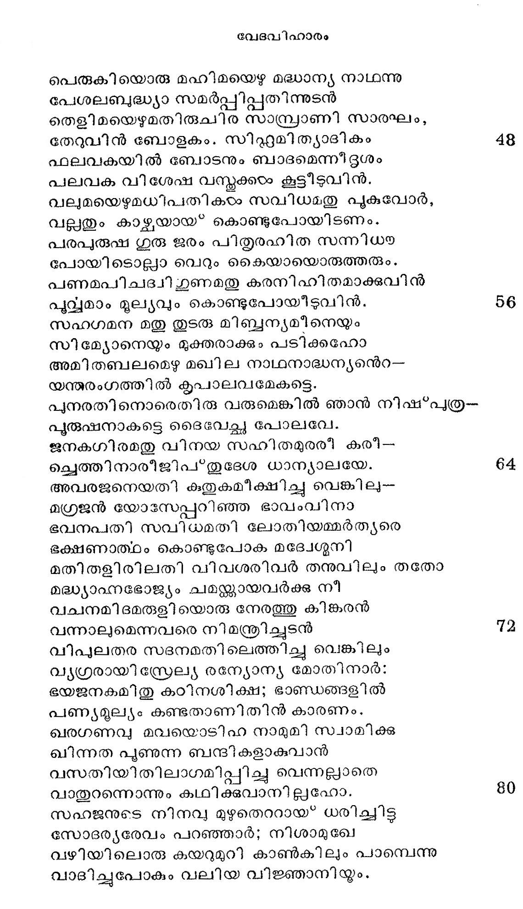
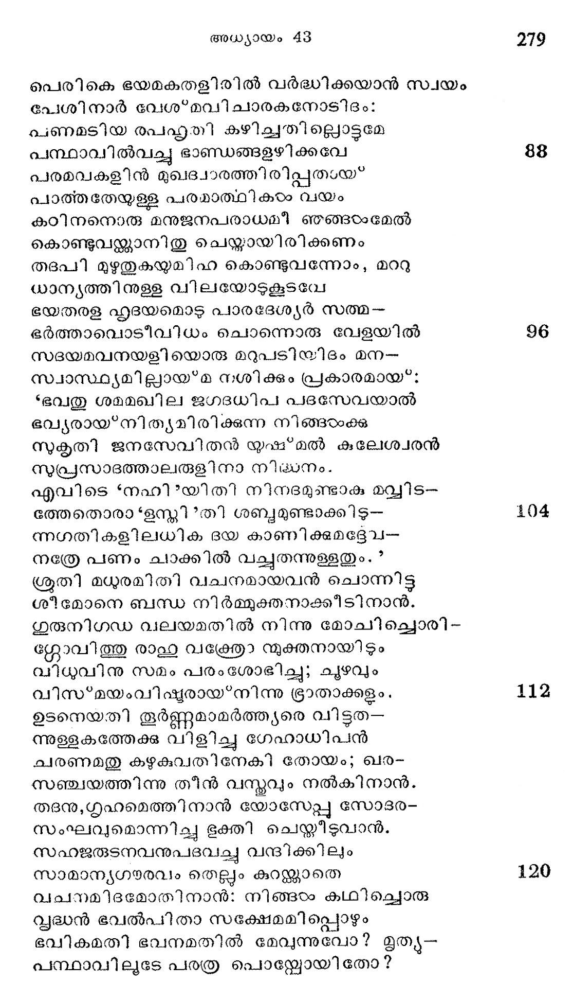
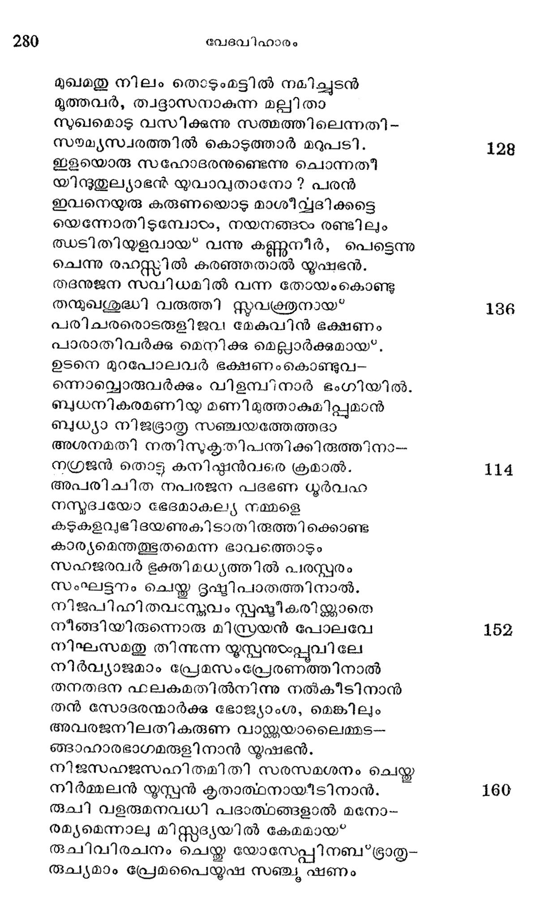

ഇസ്രയേല് പ്ത്രന്മാര് ബന്യമീനോടുകൂടി മിസ്രയിമില് എത്തുന്നതു്
കുടറയദിനമുദവസി തമതിലവര് നയിക്കവേ
കൊണ്ടുവന്നുള്ളൊരു ധാന്യസംഘാതകം.
മുഴുഭവനമശനവിധി കഴിവതിനു പാചകര്
മുററും വ്യയിചല്ചതായ* കണ്ടു യാക്കോബനും

നിജസുതരൊടുടനരുളി നിങ്ങളാ മിസ്രന്ക്ക
നിന്തമിപ്പിന് ധാന്യമാവശ്യകം തുലോം.
ഗൃഹിണികളമവരുട്യ മരുമകളരും മററു
ഗൃഹ്യരാം ചേടകര് ബാലരിത്യാദികം
ഗണമിവിടെ മുറവിളികംം കൂട്ടുന്നു; മുട്ടിനാല്
ഗംഭീരചിത്തവും പാരം തളര്ന്നുപോം.,
സ്വജനചയരുദിതമതിനുപശമന മേകുവോന്
സ്വാധ്യാനുഭൂതി മാനെന്നു ചൊല്ലം ബധര്
അതുബത പ്രമാണിച്ചു പോകുവിന് മിസ്രരയി-
ലാഹാര ലബ്ദിക്ക താമസമെന്നി യെ.
എതുതരശ്രമത്തിനും കാലാവലോകന--
മേററവും സംഴകര്യമേകം നരന്നഹോ!
ഉടനവരിലുരുഗരിമ വളരുമമാരു യൂദ, ത-
ന്നുല്കൃഷ്യചിത്തനാം താതനോടുക്തവാന്:
അനുജസഹഗമനമതിനനുമതി ഭവാനേകി --
യല്ലാതെ പോകില്ല ഞങ്ങളങ്ങോട്ടിനി
അധിപതിമുഖം ഞങ്ങരഠം കാണേണമെങ്കിലി--
യര്ഭകന് കൂടി വരേണമെന്നമ്മഹാന്
അരുളിയതു മനസി നിരുപിക്കുമ്പൊഴന്തിനീ--
യഗ്രജന്മാര് ഞങ്ങളങ്ങോട്ട പോവതും ?
ജനുകനുടനൂചിവാന് സോദര്യനുണ്ടെന്നു
ജാള്യബുദ്ധ്യാ ചൊന്നതെന്തു തത്സന്നിധയ?
അതിനു പതില്ളറി മക, നേവം കനിഷ്ഠകനേ--
യാഗമിപ്പിക്കണമെന്നുള്ള ശാസനം
മഹിപഭതമുഖകുഹരമതിലുദയമാമെന്നു
മാന്ഷമന്മാര് ഞങ്ങളോര്ത്തിരിക്കാവതോ?
കുലവിവരമറിവതിനു ചെയ്ത പ്പച്ഛത്തിവര്
കേവലം പ്രതൃക്തി ചൊന്നതേയുള്ളതാല്
മസറയിലയമ്റ്ണണം പുത്രം മയാസമം
മാന്യബുദ്ധേയവന് പേര്ക്ക ഞാന് ലഗ്നകന്.
തവസവിധമതിലവനെയത്രൈവ കൊണ്ടന്നു
തന്നിടാമല്ലായ്കില് ഞാനപരാധിയായ"
സതതവുമിരുന്നിടാമെന്നുള്ളതെന്നിയേ
സാസ്ത്രതമൊന്നും കഥിപ്പതിന്നില്ലമേ.
തടയിതിനു തവഹ്ൃദയമതിലുദിതമാകായ്കില്
തത്ര പോയ്*വന്നേനെ രണ്ടുരു ഞങ്ങളും.
കഠിനമിഹ താമസം, മക്ഷണാഭാവതഃ
കായവൈക്സബ്യം പെരുകുന്നു സവ്വര്ക്കും.
ഇസഹസുതനിതിനു പതിലോതിയെന്നാല് നിങ്ങ-
ഉളെത്രയും വേഗത്തിലെത്തുവിന് മിസ്രരയില്

പെരുകിയൊരു മഹിമയെഴു മദ്ധാന്യ നാഥന്നു
പേശലബദ്ധ്യാ സമര്പ്പിപ്പതിന്നുടന്
തെളിമയെഴുമതിരുചിര സാമ്പ്രാണി സാരഘം,
തേറുവിന് ബോളകം. സിഷ്റമിത്യാദികം
ഫലവകയില് ബോടനും ബാദമെന്ന് ഭൃശം
പലവക വിശേഷ വസ്തുക്കം കൂട്ടീടുവിന്.
വലുമയെഴുമധിപതികടം സവിധമതു പുകുവോര്,
വല്ലതും കാഴ്ചയായ* കൊണ്ടുപോയിടണം.
പരപുരുഷ ഗുരു ജരം പിതൃരഹിത സന്നിധയ
പോയി ടൊല്ലപാ വെറും കൈയായൊരുത്തരും.
പണമപിചദ്വിഗുണമതു കരനിഹിതമാക്കുവിന്
പൂവ്യമാം മൂല്യവും കൊണ്ടുപോയിടുവിന്.
സഹഗമന മതു തുടരു മിബ്ബന്യമീനെയും
സിമ്യോനെയും മുക്തരാക്കും പടിക്കഹോ
അമി തബലമെഴു മഖില നാഥനാദ്ധന്യന്ന്െറ--
യന്തരംഗത്തില് കൃപാലവമേകട്ടെ.
പുനരതിനൊരെതിരു വരുമെങ്കിൽ ഞാന് നിഷ്*പത്ര-
പുരുഷനാകട്ടെ ദൈവേച്ഛ പോലവേ.
ജനകഗിരമതു വിനയ സഹിതമുരരീ കരീ--
ചെത്തിനാരീജിപ*തുദേശ ധാന്യാലയേ.
അവരജനെയതി കുതുകമീക്ഷിച്ചു വെങ്കില-
മഗ്രജന് യോടസപ്പുറിഞ്ഞ ഭാവംവിനാ
ഭവനപതി സവിധമതി ലോതിയമ്മര്ത്ൃരെ
ഭക്ഷണാത്ഥം കൊണ്ടുപോക മദ്വേഗ്ദനി
മതിതളിരിലതി വിവശരിവര് തനുവിലും തതോ
മദ്ധ്യാഹ്നഭോജ്യം ചമയ്ക്കായവര്ക്കു നീ
വചനമിദമരുളി യൊരു നേരത്തു കിങ്കരന്
വന്നാലുമെന്നവരെ നിമന്ത്രിച്ചുടന്
വിപുലതര സദനമതി ലെത്തിച്ചു വെങ്കിലും
വൃഗ്രരായി സ്രേല്യ രന്യോന്യ മോതിനാര്:
ഭയജനകമിതു കഠിനശിക്ഷ; ഭാണ്ഡങ്ങളില്
പണ്യദുല്യം കണ്ടതാണിതിന് കാരണം.
ഖരഗണവ മവയൊടിഹ നാമുമി സ്വാമിക്കു
ഖിന്നത പൂണുന്ന ബന്ദികളാകുവാന്
വസതിയിതിലാഗമിപ്പിച്ച വെന്നല്യാതെ
വാതുറന്നൊന്നും കഥിക്കുവാനില്പഹോ.
സഹജനുടെ നിനവ മുഴുതെററായ* ധരിച്ചിട്ട്
സോദര്യരേവം പറഞ്ഞാര; നിശാമുഖേ
വഴിയിലൊരു കയറുമുറി കാണ്കിലും പാമ്പേന്നു
വാദിച്ചുപോകും വലിയ വിജ്ഞാനിയ്ം.

പെരികെ ഭയമകതളിരില് വര്ദ്ധിക്കയാന് സ്വയം
പേശിനാര് വേശ*മവിചാരകനോടിദം:
ചണമടിയ രപഹഷ്ൃതി കഴിച്ചതില്ലൊട്ടമേ
പന്ഥാവില്വച്ചു ഭാണ്ഡങ്ങളഴിക്കവേ
പരമവകളിന് മുഖദ്വാരത്തിരിപ്പതായ്
പാത്തതേയുള്ള പരമാത്ഥികാഠം വയം
കഠിനനൊരു മനുജനപരാധമീ ഞങ്ങടഠംമേല്
കൊണ്ടുവത്ക്കാനിതു ചെയ്യായിരിക്കണം
തദപി മുഴുതുകയുമിഹ കൊണ്ടുവന്നോം, മററു
ധാന്യത്തിരുള്ള വിലയോടുകൂടവേ
ഭയതരള ഹൃദയമൊടു് പാരദേശ്യര് സത്മ-
ഭര്ത്താവൊടീവിധം ചൊന്നൊരു വേളയില്
സദയമവനയളി യൊരു മറുപടിയിദം മന-
സ്വാസ്ഥ്യമില്ലായ*മ നശിക്കും പ്രകാരമായ:
ഭവതു ശമമഖില ജഗദധിപ പദസേവയാല്
ഭവ്യരായ*നിത്ൃമിരിക്കുന്ന നിങ്ങരംക്കു
സുകൃതി ജനസേവിതന് യുഷ*്മൽ കുലേശ്വരന്
സുപ്രസാഭത്താലരുളിനാ നിഷനം.
എവിടെ “നഹി യിതി നിനദമുണ്ടാക മവ്വിട-
ത്തേതൊരാ 'ഉസ്തി ?തി ശബ്ദമുണ്ടാക്കി ൭-
ന്നഗതികളിലധിക ദയ കാണിക്കുമദ്ദേവ-
നത്രേ പണം ചാക്കില് വച്ചുതന്നുള്ളതും. *
ശ്രൂതി മധുരമിതി വചനമായവന് ചൊന്നിട്ട
ശീമോനെ ബന്ധ നിര്മാമുക്തനാക്കീടിനാന്.
ഗുരുനിഗഡ വലയമതില് നിന്നു മോചിച്ചൊരി-
ഗ്ലോവിത്തു രാഹു വഭ്രേതാ നമുക്തനായിടും
വിധവിനു സമം പരംശോഭിച്ചു; ചുഴവും
വിസ്*്മയംവിഷ്ടരായ*നിന്നു ഭ്രാതാക്കളം,
ഉടനെയതി തൂര്ണ്ണമാമര്ത്ത്യരെ വിട്ടത-
ന്നുള്ളകത്തേക്കു വിളിച്ചു ഗേഹാധിപന്
ചരണമതു കഴുകുവതിനേകി തോയം; ഖര-
സഞ്ചയത്തിന്നു തീന് വസ്തവും നല്കിനാന്.
തദനുംഗൃഹമെത്തിനാന് യോസേപ്പു സോടര-൦
സംഘവുമൊന്നിച്ചു ഭക്തി ചെയ്തീടുവാന്.
സഹജരുടനവനുപടവച്ചു വന്ദിക്കിലും
സാമാന്യഗയരവം തെല്ലം കുറക്കാതെ
വചനമിദമോതിനാന്: നിങ്ങഠം കഥിച്ചൊരു
സൃദ്ധന് ഭവല്പിതാ സക്ഷേമമിപ്പൊഴും
ഭവികമതി ഭവനമതില് മേവുന്നുവോ? മൃത്യ-
പന്ഥാവിലൂടേ പരത്ര പൊലയ്ലോയിതോ?

മുഖമതു നിലം തൊടുംമട്ടില് നമിച്ചുടന്
മൂത്തവര്, താുദ്ദാസനാകുന്ന മലുിതാ
സുഖമൊടു വസിക്കുന്നു സത്മത്തിലെന്നതി -
സയമ്യസ്വരത്തില് കൊടുത്താര് മറുപടി.
ഇളയൊരു സഹോദരനുണ്ടെന്നു ചൊന്നതീ
യിന്ദുതുല്യാഭന് യവാവുതാനോ ? പരന്
ഇവനെയുരു കരുണയൊടു മാശീവദിക്കട്ടെ
യെന്നോതിടുമ്പോടം, നയനങ്ങംം രണ്ടിലും
ത്വടിതിയുളവായ* വന്നു കണ്ണുനീര്, പെട്ടെന്നു
ചെന്നു രഹസ്തില് കരഞ്ഞതാല് യൂഷഭന്.
തദനുജന സവിധമില് വന്ന തോയംകൊണ്ടു
തന്മുമശുദ്ധി വരുത്തി സ്ത്വക്രതനായ*
പരിചരരൊടതരുളിജവ മേകുവിന് ഭക്ഷണം
പാരാതിവര്ക്കു മെനിക്കു മെല്ലാര്ക്കുമായ*.
ഉടനെ മുറപോലവര് ഭക്ഷണംകൊണ്ടുവ-
ന്നൊവ്വൊരുവര്ക്കും വിളമ്പിനാര് ഭംഗിയില്.
ബുധനികരമണിയ മണി മുത്താകുമിപ്പുമാന്
ബുധ്യാ നിജടഭ്രാതൃ സഞ്ചയത്തേത്തദാ
അശനമതി നതിസുകൃതിപന്തിക്കിരുത്തിനാ--
നഗ്രജന് തൊട്ടു കനിഷ്ടഠാന്വരെ ക്രമാല്.
അപരിചിത നപരജന പദഭണ ധൂര്വഹ
നസുദ്വയോ ഭേദമാകല്്യ നമ്മളെ
കടുകളവുഭിദയണുകിടാതിരുത്തിക്കൊണ്ട
കാര്യമെന്തത്ഭുതമെന്ന ഭാവത്തൊടും
സഹജരവര് ഭൂക്തിമധ്യത്തില് പരസ്പരം
സംഘട്ടനം ചെയ്ത ഭൂൃഷ്ടിപാതത്തിനാല്.
നിജപിഹിതവാസ്മവം സ്പപൂഷ്ടീകരിയ്ക്കാതെ
നീങ്ങിയിരുന്നൊരു മിസ്രയന് പോലവേ
നിഘേസമതു തിന്നുന്ന യൂസ്പനുടംപ്പുവിലേ
നീര്വ്യാജമാം പ്രേമസംപ്രേരണത്തിനാല്
തനതദന ഫലകമതില്നിന്നു നല്കീടിനാന്
തന് സോദരമ്മാർക്കു ഭോജ്യാംശ, മെങ്കിലും
അവരജനിലതികരുണ വാഴന്ക്കയാലൈമ്മട-
ഞ്ടാഹാരഭാഗമരുളിനാന് യൂഷഭന്.
നിജസഹജസഹിതമിതി സരസമശനം ചെയ്ത
നിര്മ്മലന് യൂസ്പന് കൃതാത്ഥനായിടിനാന്.
രുചി വളരുമനവധി പദാത്ഥങ്ങളാല് മനോ.--
രമ്യമെന്നാല മിസ്റ്റദ്ൃയയില് കേമമായ*
രുചിവിരചനം ചെയ്ത യോസ്േപ്പിനബ'*ഭ്രാതൃ-
രൂച്യമാം പ്രേമപൈയുഷ സഞ്ചു ഷണം
